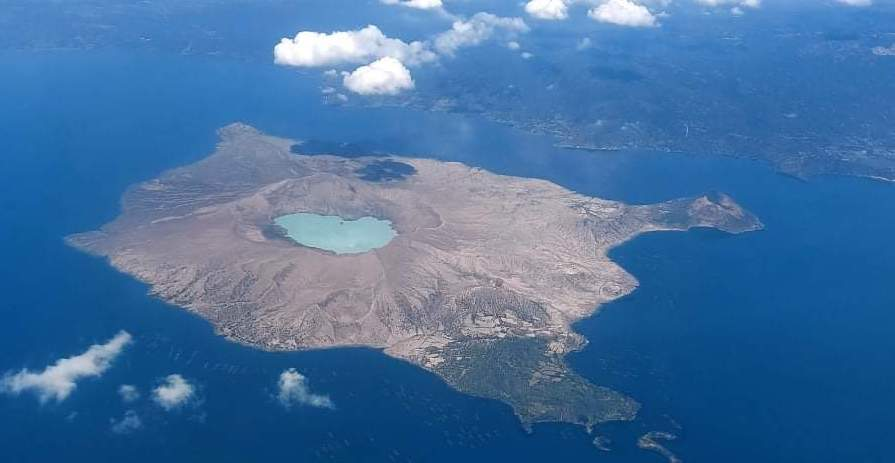

Features
- Approximately 14 kilometers
- Over 30 recorded eruptions
- Located on Taal Lake
- Home to diverse flora and fauna
- Stunning panoramic views
- Numerous hiking trails
Visitor Information
Location: Batangas
Best Time to Visit: November to April
Activities: Hiking and Trekking, Boat Rides, Photography, Cultural Experiences
Plan Your Visit
For more information on planning your visit to the Taal Volcano, check out the following resources:
Learn More Go Back